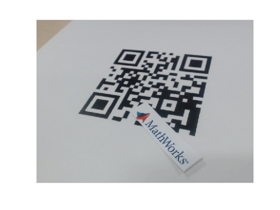
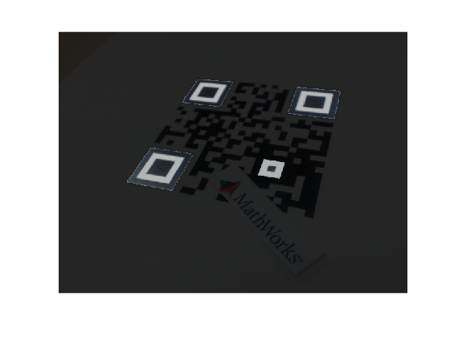
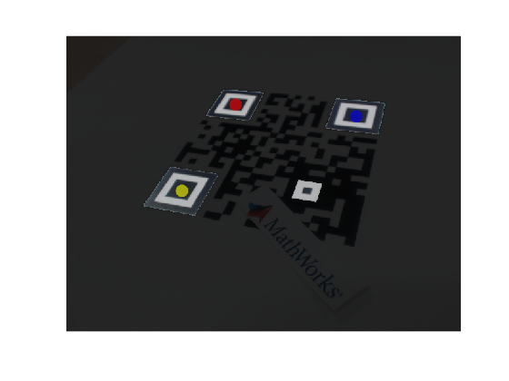
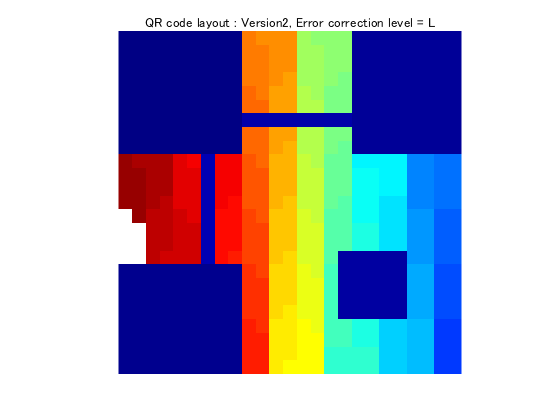
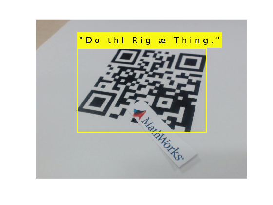
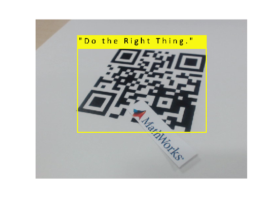

Contents
- QR Code decoder
- 画像データ読み込み
- 画像データを2値化
- QRコードの位置検出用パタン(ファインダ)検出
- ファインダの中心3座標を抽出
- 歪み補正用アライメントパターン検出
- ファインダ&アライメントパターンの位置を可視化
- 3つのファインダの位置関係を算出し、どのような方向からQRコードが撮影されたのかを把握します
- 歪んでいるQRコードを幾何学的変換により補正します
- 幾何学変換用行列を算出
- 幾何学的変換後、結果を表示
- 細かいノイズを除去します
- 歪み補正が完了したので、改めてファインダの位置を求めます
- 3座標を抽出
- 3つのファインダの位置関係を算出します
- 座標位置に応じて画像回転
- 本例題では25x25セルのバージョン2 QRコードを用いていますが、画像における1セルあたりの大きさを求めます
- 次に、各セルの中心座標を表す配列を作成します
- 求めた中心座標情報を基に、フォーマット情報を読み取ります
- フォーマット情報の復号
- 次に、データを読み取る順番を示すインデックステーブルを作成します
- 作成したインデックスに従い、データを読み取ります
- 読み出したビット列を復号してみます
- 結果挿入(誤り訂正あり)
- 誤り訂正符号を利用し、誤った文字列を訂正します
- 結果挿入(誤り訂正あり)
QR Code decoder
- This example shows how to decode QR Code encoded in version2 format. *QR Code is a registered trademark of DENSO WAVE INCORPORATED
% バージョン2、誤り訂正レベルLのQRコードを復号する流れを確認するための % サンプルコードです % *QRコードは(株)デンソーウェーブの登録商標です clear all, close all, clc;
画像データ読み込み
- Read Image
% 予め作成しておいた画像データを読み込みます。webCamで斜めから撮影しており、 % 歪んでいます。また、QRコード上にはMathWorksのロゴが描かれた紙が置かれ、 % コードの一部が隠れている状態です img = imread('mwprinciple_webcam.png'); %img = imrotate(img, 180); imshow(img)
画像データを2値化
- Convert RGB to grayscale image and binarize
bw = imbinarize(rgb2gray(img)); imshow(bw)
QRコードの位置検出用パタン(ファインダ)検出
- Find where the finder patterns are
[Centroid, bw2, flag, width, bbox] = detectFinder(bw);
ファインダの中心3座標を抽出
- Extract XY coordinates of center of finder patterns
markers = Centroid(logical(flag),:);
歪み補正用アライメントパターン検出
- Find where the alignment pattern is
bwa = imclearborder(bw); bwa = bwpropfilt(bwa, 'EulerNumber', [0, 0]); bwa = imfill(bwa, 'holes'); stats = regionprops(bwa, 'Area', 'Centroid'); area = [stats.Area]; [mv, i] = min(area); alp = stats(i).Centroid;
ファインダ&アライメントパターンの位置を可視化
- Visualize finder and alignment patterns
% ファインダの位置可視化用マスク bwf = imfill(bw2, 'holes'); % アライメントパターンの位置可視化用マスク bwl = bwlabel(bwa); bwl = bwl == i; bwlf = bwf | bwl; mask3 = repmat(bwlf, [1 1 3]); imgf = img; % ファインダ&アライメントパターン以外の輝度値を落とす imgf(~mask3) = imgf(~mask3) * 0.2; imshow(imgf)
3つのファインダの位置関係を算出し、どのような方向からQRコードが撮影されたのかを把握します
- Understand positional relation of each patterns
[idxC, idxX, idxY] = finderPos(markers); % 3コーナーに配置されるファインダの中で、左上部に配置されるファインダの位置に % 赤色マーカを配置 imgf = insertShape(imgf, 'FilledCircle', [markers(idxC, :) 10], 'Color', 'red'); imshow(imgf) % X軸(水平)方向に対する角度が最小となる辺を成すファインダの位置に % 青色マーカを配置 imgf = insertShape(imgf, 'FilledCircle', [markers(idxX, :) 10], 'Color', 'blue'); imshow(imgf) % Y軸(垂直)方向に対する角度が最小となる辺を成すファインダの位置に % 黄色マーカを配置 imgf = insertShape(imgf, 'FilledCircle', [markers(idxY, :) 10], 'Color', 'yellow'); imshow(imgf)
歪んでいるQRコードを幾何学的変換により補正します
- Create x and y coordinates of control points for geometric transformation
[Cref, Xref, Yref, Aref] = createControlPts(idxC, idxX, idxY, width, width, markers); post = [Cref; Xref; Yref; Aref]; org = [markers(idxC, :); markers(idxX, :); markers(idxY, :); alp];
Xref = 127.7714 39.3143
幾何学変換用行列を算出
- Fit geometric transformation to control point pairs
T = fitgeotrans(org, post,'projective'); % projective2d クラス（変換行列と次元） T.T % 生成された行列の確認
ans =
0.6597 -0.0795 0.0004
0.4998 1.1124 0.0025
-183.1617 -48.5932 1.0000
幾何学的変換後、結果を表示
- Apply geometric transformation to image
bwt = imwarp(bw, T);
imshow(bwt); % デフォルトは線形補間
細かいノイズを除去します
- Remove noises
bwti = ~bwt;
%Iinv = imclose(Iinv, strel(ones(2)));
bwti = imopen(bwti, strel(ones(3)));
bwti = imclearborder(bwti);
bwt = ~bwti;
imshow(bwt)
歪み補正が完了したので、改めてファインダの位置を求めます
- Find where the finder patterns are for transposed image
[Centroid, bw, flag, width, ~] = detectFinder(bwt);
3座標を抽出
- Extract XY coordinates of center of finder patterns
markers = Centroid(logical(flag),:);
3つのファインダの位置関係を算出します
- Understand positional relation of each patterns
[idxC, idxX, idxY] = finderPos(markers);
座標位置に応じて画像回転
- Rotate image and coordinates to locate the corner of finder patterns to top left
[idxC, idxX, idxY, bwt] = rotPosition(idxC, idxX, idxY, bwt, markers); imshow(bwt)
本例題では25x25セルのバージョン2 QRコードを用いていますが、画像における1セルあたりの大きさを求めます
- Calculate the size of cell for version2 QR Code in an image
% 1セルの高さを決定 % ファインダマーカー間の距離は18セルであるので、regionpropsで求めた座標の % 距離を18で割り、1セル間の高さを求めます %xy = round(markers(idxC,:)); xy = round(idxC); %height = (markers(idxY, 2) - xy(2)) / 18; height = (idxY(1, 2) - xy(2)) / 18; % 同様にして1セルの幅を求めます width = (idxX(1, 1) - xy(1)) / 18; % QRコードに埋め込まれているタイミングパターンを利用した方がより正確ですが、 % 簡略化のために本例題では割愛します。
次に、各セルの中心座標を表す配列を作成します
- Create array that represents x and y coordinates of each cells
%QRコード : バージョン2は縦横25セル
xref = xy(1) - width*3;
yref = xy(2) - height*3;
xtable = (1:25) * width - width;
xtable = round(xtable + xref);
ytable = (1:25) * height - height;
ytable = round(ytable + yref);
求めた中心座標情報を基に、フォーマット情報を読み取ります
- Read format information to understand error correction level and mask pattern used in QR Code
% デコードを行うために必要な誤り訂正レベルや、施されたマスクパタンの情報が % 記述されています。 bwo = ~bwt; fmt1 = bwo(ytable(9), xtable([1:6,8])); fmt2 = bwo(ytable([1:6, 8:9]), xtable(9)); %fmt2 = bwo(xtable([1:6,8:9]), ytable(9)); %fmt1 = bwo(xtable(9), ytable([1:6, 8])); fdata = [fmt1, fliplr(fmt2')];
フォーマット情報の復号
- Decode format information using BCH decoder
% フォーマット情報にはマスクパタンが施されているため、xorをとります。 bitp = logical([1 0 1 0 1 0 0 0 0 0 1 0 0 1 0]); fdata = xor(fdata, bitp); % BCH符号により符号化されているので、復号します finfo = bchdec(gf(fdata), 15, 5); minfo = finfo(3:5); %マスクパタン情報
次に、データを読み取る順番を示すインデックステーブルを作成します
- Create index table that represents how to read data bits and error correction bits
% 読み出しは右下角から順に、隣り合う列と交互に読み出していき、 % コードの上端もしくは下端に到達した場合は読み出す方向を転換します。 % 基準テーブル作成 xidx = 0:24; xidx = repmat(xidx, [25, 1]); yidx = 0:24; yidx = repmat(yidx', [1, 25]); idxtbl = cat(3, xidx, yidx); % データ読み取り箇所インデックス算出 [xidx yidx reftable] = readtable(28+16); % 読み出し方が特殊なので、データと訂正符号が格納されている領域を % 可視化して確認します。 reftable = label2rgb(reftable); figure, imshow(reftable) title('QR code layout : Version2, Error correction level = L')
作成したインデックスに従い、データを読み取ります
- Read data and error correction bits according to the table
data = bwo(ytable(yidx), xtable(xidx)); %data = bwo(xtable(xidx), ytable(yidx)); data = diag(data); mx = idxtbl(:,:,1); mx = mx(yidx, xidx); mx = diag(mx); my = idxtbl(:,:,2); my = my(yidx, xidx); my = diag(my); % フォーマット情報に記載されたマスクパタンの情報を基に、 % 該当箇所のデータを反転します。 mask = cat(3, mx, my); invidx = maskGen(mask, minfo); data(invidx) = ~data(invidx);
読み出したビット列を復号してみます
- Try to decode data without error correction
% version2, 誤り訂正レベルLの場合、文字数は最大28、 % 誤り訂正符号は16となります。 % データの先頭4bitはQRコードのモード指示子になっています。 % 以降のデコードに必要なため、まずモードを確認します。 % 1 : 数字モード % 2 : 英数字モード % 3 : 8bitモード % 4 : 漢字モード data = num2str(data)'; mode = data(1:4); mode = bin2dec(mode); % ここでは、8bitモードのみ取り上げます。 if mode == 4 % 8bitモード %文字数指示子の復号 length = data(5:12); length = bin2dec(length); D = data(13:end); text = cell(1, length); for i = 1:length tmp = D((i-1)*8+1:i*8); text{1, i} = char(bin2dec(tmp)); end end % 復号した結果を表示 text = strjoin(text) % 何らかの文字列が確認できましたが、QRコード上に置かれた紙によって % 一部が隠れていたため、文字列が正しく読めていない可能性が大です。
text =
'" D o t h l R i g æ T h i n g . "'
結果挿入(誤り訂正あり)
- Insert decoded data into image and visualize it
I1 = insertObjectAnnotation(img, 'rectangle', bbox.BoundingBox,... text, 'TextBoxOpacity',0.9,'FontSize',26,'LineWidth',3); figure, imshow(I1)
警告: 既定のフォント LucidaSansRegular には、入力として指定された 1 つ以上の文字が含まれてい ません。それらの文字を削除するか、それらの文字を含む別のフォント ファイルを使用することを検討して ください。'Font' パラメーター値のペアを使用して、別のフォントを指定できます。
誤り訂正符号を利用し、誤った文字列を訂正します
- Decode data bits with error correction
% QRコードではブロック誤りに強いRS(リードソロモン)が利用されています。 % まず、2進のビット列を10進に変換し、扱いやすくします。 data2 = zeros(1, 44); for i = 1:44 tmp = data((i-1)*8+1:i*8); data2(1, i) = bin2dec(tmp); end %データと訂正符号に分離します。 data = data2(1, 1:28); tail = data2(1, 29:end);
RS(リードソロモン)復号化器のコンフィグレーション
m = 8; % 1シンボルあたりのビット数 n = 2^m-1; % 符号語長 k = n-size(tail, 2); % メッセージ長 hDec = comm.RSDecoder(n,k); hDec.GeneratorPolynomialSource = 'Property'; % 符号の生成多項式はユーザー指定 hDec.GeneratorPolynomial = rsgenpoly(n,k,[],0); % 生成多項式 % 短縮符号であるため、前方をゼロパディング shortmsg = [zeros(1,n-size(data, 2)-size(tail,2)) data tail]'; decoded = step(hDec, shortmsg); decoded = decoded(size(decoded,1)-size(data,2)+1:size(decoded,1),1); % 10進>2進変換 tmp = 0; for i = 1:28 tmp = [tmp, dec2bin(decoded(i),8)]; end databox = tmp(1,2:end); mode = databox(1:4); mode = bin2dec(mode); % ここでは、8bitモードのみ取り上げます。 if mode == 4 % 8bitモード %文字数指示子の復号 length = databox(5:12); length = bin2dec(length); D = databox(13:end); text = cell(1, length); for i = 1:length tmp = D((i-1)*8+1:i*8); text{1, i} = char(bin2dec(tmp)); end end % 復号した結果を表示 text = strjoin(text)
text =
'" D o t h e R i g h t T h i n g . "'
結果挿入(誤り訂正あり)
- Insert decoded data into image and visualize it
I2 = insertObjectAnnotation(img, 'rectangle', bbox.BoundingBox,... text, 'TextBoxOpacity',0.9,'FontSize',26,'LineWidth',3,'Font','Calibri'); figure, imshow(I2)